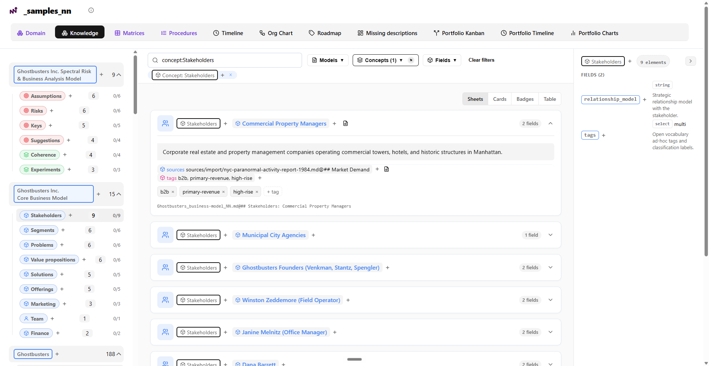

AI based Information Management
Turn 💡 ideas into Evolving Knowledge
CogNNitive is a Knowledge Evolution Framework that turns information scattered across multiple folders and files into a structured, living kNNowledge base with radical traceability.
- 📕 report.pdf
- 🎵 interview.mp3
- 📄 notes.txt
- 📗 budget.xlsx
- 📘 brief.docx
- 📄 report.pdf_NN.md
- 📄 interview.mp3_NN.md
- 📄 notes.txt_NN.md
- 📄 budget.xlsx_NN.md
- 📄 brief.docx_NN.md
File ingestion
cogNNitive reads the files you already have in your local folders and keeps a verbatim copy — originals are never touched. Sources stay in plain text: Markdown, JSON or CSV. If a file isn't readable text — a PDF, a DOCX, an audio file — it's converted to plain text first. That plain text is what the AI reads and cites, and what feeds your knowledge base.
Knowledge modeling
The single source of truth for your knowledge: plain-text sources become structured kNNowledge — concepts, elements and fields — that reads like a database and traces every record back to the exact source section. Browse and edit it in the web console, or let your AI agent do it for you.
Artifact Generation
From your kNNowledge, cogNNitive generates the artifacts each moment needs — the domain console, a website, an executive brief, a specification — consistent and traced back to the source. Reviews on those artifacts flow back in, so the knowledge keeps evolving.
Who is cogNNitive For?
Real problems, tangible workflows, and verifiable outcomes across industries.
Turn messy investor feedback, pitch decks, and discovery transcripts into an auditable business model where pivots update the whole company in 1 hour.
💼Unify scattered rate cards, service packages, and credentials in Git. Generate tailored RFP responses with mathematically verified citations.
🎨Capture kickoff audio and structure information architecture citing exact client requirements. Export clickable HTML previews for formal sign-off.
🎬Import papers, videos, and datasets. Write scripts with fine-grained claim citations and auto-generate shooting B-roll cues and video descriptions.
Knowledge Lifecycle Architecture
A continuous, auditable flow from raw inputs to living kNNowledge, project artifacts, and feedback.
flowchart LR
subgraph P1["1. IMPORT & NORMALIZE"]
RAW["📁 Raw Inputs\n(Audio, Docs, Sheets, Notes)"] --> NORM["📝 sources/import/ + _sidecar_NN.md\n(Markdown + Citations)"]
end
subgraph P2["2. MANAGE (Living SSOT)"]
NORM --> MOD["🧠 kNNowledge/*_NN.md\n(Concepts, Elements, Fields)"]
MOD <--> EDIT["👥 Text Editors · Console · AI Agents"]
end
subgraph P3["3. EXPORT & FEEDBACK"]
MOD --> ART["📊 artifacts/\n(Dashboards, Briefs, Specs)"]
ART -.->|"Closed-Loop Feedback"| RAW
end
classDef p1 fill:#EBF3FF,stroke:#007AFF,color:#003D82;
classDef p2 fill:#F6EEF6,stroke:#4D0E4E,color:#4D0E4E;
classDef p3 fill:#E8F8F0,stroke:#34C759,color:#105C29;
class RAW,NORM p1;
class MOD,EDIT p2;
class ART p3;
6 Key Benefits
Why modern teams and AI builders choose cogNNitive to organize their knowledge.
Immediate Clarity & Speed
Turn chaotic meetings, raw recordings, and scattered files into structured, actionable knowledge in minutes.
Zero Vendor Lock-in
100% plain Markdown files in your own Git repository. You retain complete ownership of your knowledge forever.
AI You Can Actually Trust
Deterministic section-level citations eliminate hallucinations and ensure your AI pair-programmer operates on ground truth.
Effortless Company Updates
When business assumptions, prices, or specs change, update the kNNowledge and all downstream artifacts reflect the change automatically.
Universal Freedom of Access
Work visually with the domain console, textually in VS Code / Obsidian, or conversationally via your AI agent.
100% Free & Open Source
Built for the open community under the MIT license. No hidden cloud subscriptions or artificial limits.
How to Get Started
Get started with cogNNitive in 3 simple steps inside your domaiNN.
Open Your domaiNN
Launch OpenCode Desktop, VS Code, or Antigravity and open your project domaiNN folder.
Prompt Your Agent
Tell your AI agent the single bootstrap phrase in the chat:
Enjoy Living Knowledge
Your agent automatically installs the skills, configures tools, and presents your interactive workflow menu.
Give your AI agent specialized powers
cogNNitive ships as modular skills that extend any AI coding agent — Claude Code, Cursor, Antigravity, Codex, or OpenCode Desktop.
nn
The router. Reads your intent and hands off to the right skill or workflow.
nn-sources
Bootstrap, scan and cognitivize your files into citable sources with provenance.
nn-innfo
Author, validate and review iNNfo kNNowledge and bluepriNNts.
nn-preflight
Environment readiness and integrity checks before you model.
nn-design-presets
Design system and presets for building sites and Docsify documentation.
nn-upgrade
Guided upgrades for domaiNN workspaces and bluepriNNt versions.
Your knowledge base, made navigable
One self-contained HTML file per domaiNN, generated locally. It runs offline — no server, no account.

Visual Modeling
Explore your kNNowledge as interactive graph trees, matrices and diagrams.
Automatic Validation
Catch broken links, missing properties and outdated specs as you edit.
AI & Web Editing
Edit visually in the console, or ask your AI agent to create and update kNNowledge for you.
The A ⇄ K Paradigm
Turn Anything into structured Knowledge, and back into Anything using AI.
flowchart LR
A1["📄 Anything In (A)
(Raw meetings, notes, PDFs, data)"] -->|"Structure & Verify"| K["🧠 Structured Knowledge (K)
(Living kNNowledge, concepts, citations)"]
K -->|"Project Tailored Artifacts"| A2["📊 Anything Out (A)
(Dashboards, executive briefs, specs)"]
A2 -.->|"Virtuous Feedback Loop"| A1
classDef a fill:#FAFAFC,stroke:#636366,color:#111112;
classDef k fill:#F6EEF6,stroke:#4D0E4E,color:#4D0E4E,font-weight:bold;
class A1,A2 a;
class K k;
Anything In (A)
Any file or thought you have: meetings, audio transcripts, PDFs, spreadsheets, or raw brainstorming notes.
Structured Knowledge (K)
The single source of truth — predictable kNNowledge, clear concepts, typed attributes, and verifiable citations.
Anything Out (A)
AI generates the exact artifact you need — interactive dashboards, executive briefs, specs, or task lists.
The virtuous loop is fully reversible (A ⇄ K): inputs and outputs stay decoupled through a single semantic core, and every pass enriches the underlying knowledge.
Extreme Traceability & Lineage
Transform scattered audio, spreadsheets, documents, and chats into verified kNNowledge with permanent section anchors.
1. Multimodal Normalization
Normalize audio transcripts (.srt/.vtt), spreadsheets (.csv/.xlsx), conversation logs, and PDFs into a co-located _sidecar_NN.md beside each file in sources/import/.
2. Permanent Section Anchors
kNNowledge links assertions directly to sources using clear heading syntax (sources:: [report.md#budget]). Volatile line numbers are rejected in favor of permanent anchors.
3. Project Artifacts & Lineage
Generate interactive HTML dashboards, executive briefs, and formal specifications with verified citations and automatic lineage tracking (derived_from: [kNNowledge_NN]).
flowchart LR
subgraph Sources["1. SOURCES (sources/import/)"]
S1["🎥 Subtitles & Audio Transcripts"]
S2["📊 Spreadsheets & Data Tables"]
S3["📑 Documents, PDFs & Chats"]
end
subgraph Model["2. kNNowledge (kNNowledge/*_NN.md)"]
M["🧠 Living Concepts & Elements
sources:: [source.md#slug]"]
end
subgraph Output["3. ARTIFACTS (artifacts/)"]
O1["📊 Interactive HTML Dashboards"]
O2["📑 Executive Briefs & Specs"]
end
Sources -->|"Permanent Section Citations"| M
M -->|"Deterministic Projection"| Output
Output -.->|"Feedback Re-ingestion"| Sources
classDef s fill:#FAFAFC,stroke:#636366,color:#111112;
classDef m fill:#F6EEF6,stroke:#4D0E4E,color:#4D0E4E,font-weight:bold;
classDef o fill:#FFFFFF,stroke:#6A1B6B,color:#111112;
class S1,S2,S3 s;
class M m;
class O1,O2 o;
Goodbye Fragmented Documentation
The difference between unmaintained chaotic notes nobody trusts and an active semantic foundation.
### 🔹 PricingTier [Element]
- tier_name:: Growth
- price_monthly:: 49
- billing_model:: per-seat
- sources:: [meeting_q3.md#approved-pricing]
### 🔹 BudgetCap [Element]
- q3_ceiling:: 45000
- approved_by:: Dave
- sources:: [finance_sync.md#executive-signoff]What cogNNitive is NOT
Clear boundaries keep the ecosystem honest, simple, and yours. If it isn't listed here, it isn't the product.
Not a database
kNNowledge documents are plain Markdown files in your own Git repository. No proprietary storage engine, no hidden silo, no lock-in.
Not a hosted platform
No mandatory cloud service or managed infrastructure that owns your knowledge. Everything runs locally or in your browser.
kNNowledge never executes code
_NN.md files are data, not programs — no macros, scripts, arbitrary commands, or auto-installed plugins. Opening a kNNowledge never runs anything.
Not a real-time collaboration platform
No live multi-user editing, presence, or sync protocol. Collaboration is the engineering way: files in Git, branches, and reviews.
Not a vector database / RAG platform
It structures knowledge so retrieval works, but it does not store embeddings or manage retrieval infrastructure. Connect the vector tool of your choice.
Not a document authoring suite
It does not replace your wiki, CMS, or word processor. It organizes the knowledge those tools produce into validated, linked kNNowledge.
Not a universal format
OKF-compatible and plain Markdown, but not the single format for all knowledge. Your source of truth stays yours.
Not a one-shot AI converter
The A ⇄ K cycle is reversible and iterative. A single unvalidated lossy conversion is not the product — living, validated kNNowledge are.
A Living Knowledge Base Powered by AI
Three foundational pillars that define how cogNNitive turns scattered inputs into living information.
Knowledge
The ideas in your team's brains and the data in your computer files — meetings, docs, chats, sheets — captured and structured so humans and AI agents can query and build upon it with 100% confidence.
Evolution
Knowledge is never frozen. Every pass validates, enriches, and updates it, creating a living knowledge base that continuously evolves as your project grows.
Framework
A set of processes and tools — iNNfo kNNowledge, agent skills, and the domain console — that guide knowledge from scattered input to verified, traceable output, maximizing value provided.
Ready to Evolve Your Team's Knowledge?
Whether you want to implement cogNNitive in your organization, build custom AI agent skills, or schedule a 1-on-1 strategy call, we're ready to collaborate.